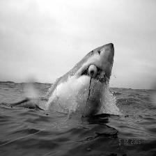

Image and Video Recolorization using C.N.N.
Here below are a set of examples which were generated using our model of various pictures and a video which was colorised.

original
(click on the blue line and then move the mouse)
Try us too !!
